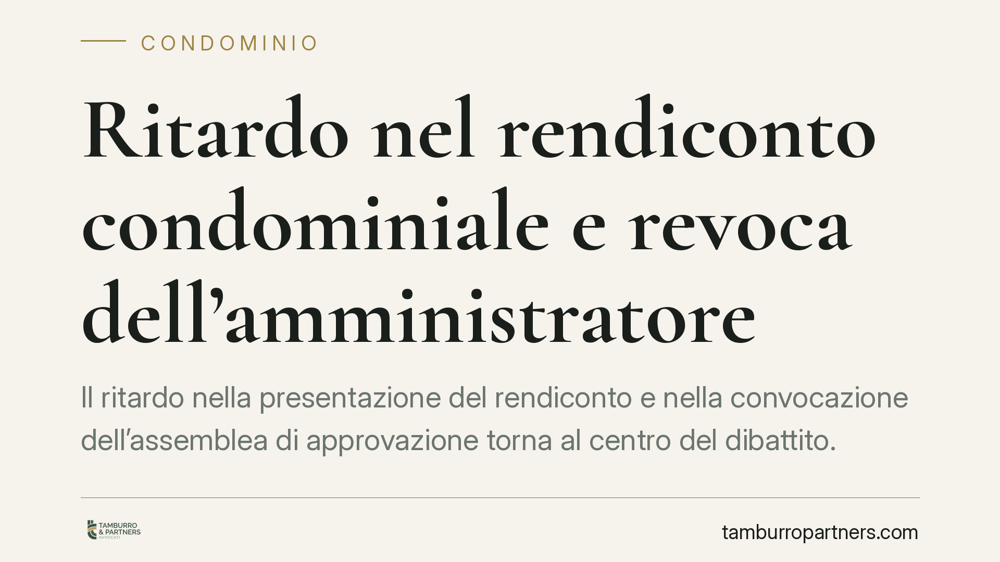

Ritardo nel rendiconto condominiale e revoca dell'amministratore
Il ritardo nella presentazione del rendiconto e nella convocazione dell'assemblea di approvazione torna al centro del dibattito. Per i condomini è una delle irregolarità più ricorrenti; per l'amministratore, un rischio concreto di revoca giudiziale. Vediamo cosa dice davvero il Codice civile, quali sono i confini della grave irregolarità e come muoversi in modo ordinato.

Il quadro della questione
Uno dei doveri centrali dell'amministratore di condominio è la resa del conto della gestione. Il ritardo prolungato nella predisposizione del rendiconto annuale e nella convocazione dell'assemblea chiamata ad approvarlo è, nella pratica, tra i motivi di contenzioso più frequenti tra amministratore e condomini.
La domanda ricorrente è: quanto ritardo è tollerabile prima che scatti la possibilità di chiedere la revoca? E il successivo adempimento tardivo mette al riparo l'amministratore? Le risposte non sono così lineari come talvolta si legge, e vale la pena distinguere con precisione.
Inquadramento normativo
Il punto di partenza è l'art. 1130 c.c., che al n. 10) impone all'amministratore di redigere il rendiconto condominiale annuale e di convocare l'assemblea per la relativa approvazione entro centottanta giorni. È da qui che deriva il termine dei 180 giorni: non da una regola giurisprudenziale, ma direttamente dalla lettera dell'art. 1130 n. 10 c.c.
Sul versante delle sanzioni, l'art. 1129 c.c. disciplina la revoca. Oltre alla revoca decisa dall'assemblea, il dodicesimo comma elenca le "gravi irregolarità" che legittimano la revoca giudiziale su ricorso di ciascun condomino. Tra queste, il n. 4) del dodicesimo comma tipizza espressamente l'ipotesi in cui l'amministratore ometta di convocare l'assemblea per l'approvazione del rendiconto, ove sussistano le condizioni di legge. È questo il riferimento pertinente al ritardo nel rendiconto, non il n. 1) dello stesso comma, che riguarda profili diversi (in particolare le comunicazioni obbligatorie e la gestione del conto corrente condominiale).
Sullo sfondo resta l'art. 1713 c.c.: l'amministratore è un mandatario e ha l'obbligo di rendere il conto del proprio operato. È la natura fiduciaria del mandato a spiegare perché la trasparenza contabile non sia un adempimento formale, ma il cuore del rapporto.
La sanabilità del ritardo: orientamento non pacifico
Si legge spesso che il ritardo, una volta superata la soglia della grave irregolarità, non sarebbe più sanabile con l'adempimento successivo. Va detto con onestà: si tratta di un tema oggetto di orientamenti contrastanti.
Secondo una lettura rigorosa, l'irregolarità già consumata resta rilevante ai fini della revoca giudiziale anche se l'amministratore provvede tardivamente, perché ciò che rileva è la lesione del rapporto fiduciario. Secondo un diverso orientamento, invece, l'adempimento sopravvenuto può far venir meno l'interesse alla revoca, valutato il caso concreto.
Non esiste, allo stato, un principio consolidato univoco. Presentare una delle due tesi come diritto vivente pacifico sarebbe scorretto. L'esito dipende dalla gravità, dalla reiterazione e dal comportamento complessivo dell'amministratore, rimessi alla valutazione del giudice.
Implicazioni pratiche
Per i condomini. Il ritardo nella convocazione dell'assemblea di approvazione oltre i termini di legge apre due strade distinte: la revoca deliberata in assemblea, che non richiede motivi qualificati, e la revoca giudiziale, che presuppone una grave irregolarità ai sensi dell'art. 1129, dodicesimo comma, c.c. Le due vie non vanno confuse: la prima è più semplice ma richiede i numeri assembleari; la seconda passa dal tribunale ma può essere attivata anche dal singolo condomino.
Per l'amministratore. Il rispetto del termine dei 180 giorni non è discrezionale. Un ritardo prolungato, specie se reiterato o accompagnato da opacità contabile, espone al rischio concreto di revoca. Non è prudente confidare nella sanatoria tardiva: come visto, l'orientamento non è uniforme e potrebbe non evitare la revoca.
Cosa fare in concreto
- Verificare la decorrenza. Individuare la data di chiusura dell'esercizio e calcolare i 180 giorni entro cui il rendiconto va approvato ex art. 1130 n. 10 c.c.
- Formalizzare le richieste. I condomini interessati sollecitino la convocazione per iscritto, con mezzo tracciabile, conservando la documentazione.
- Distinguere le due revoche. Valutare se percorrere la revoca assembleare o quella giudiziale, in base ai numeri disponibili e alla gravità della condotta.
- Documentare l'irregolarità. Raccogliere solleciti, verbali e comunicazioni: in sede giudiziale la prova del ritardo e della sua gravità è decisiva.
- Per l'amministratore: intervenire subito. In caso di ritardo, provvedere senza attendere il contenzioso e trasparente ricostruzione contabile ai condomini.
Consigliamo di trattare la scadenza dell'approvazione come un adempimento non negoziabile e di gestire con la massima trasparenza ogni ritardo, prima che diventi materia di giudizio.
---
*Contributo informativo a cura di Tamburro & Partners - Avv. Giuseppe Tamburro. Non costituisce parere legale.*
Ogni condominio ha una storia a sé.
Se gestisci un'amministrazione e vuoi un confronto su una specifica questione condominiale, scrivi allo studio. Ti rispondiamo entro un giorno lavorativo.